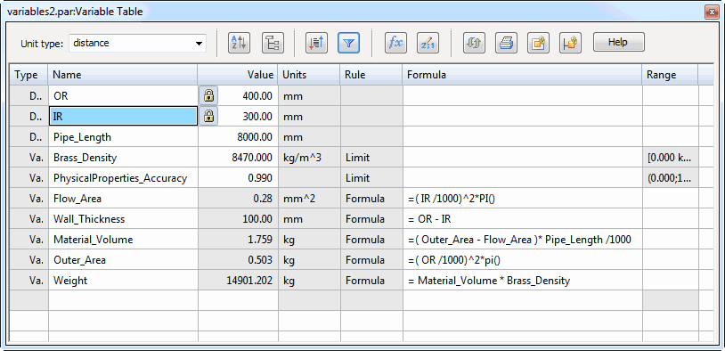
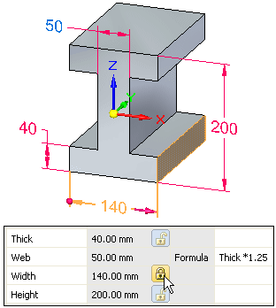
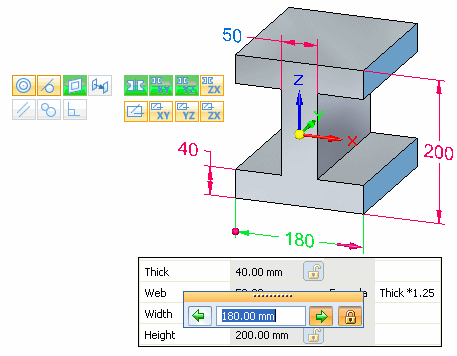
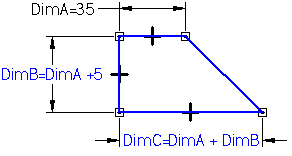
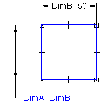
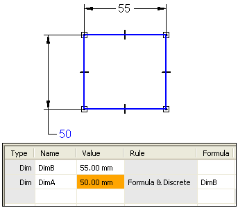
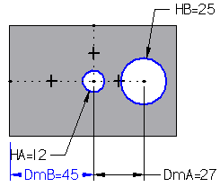
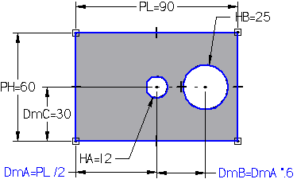
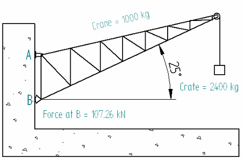

Using variables
You can use the Variable Table to define and edit functional relationships between the variables and dimensions of a design in a familiar spreadsheet format.
When you select the Variables command, the Variable Table is displayed. Each row of the table displays a variable. A series of columns is used to list the various properties of the variable, such as Type, Name, Value, Rule, Formula, and Range.

You can use variables to do the following:
-
Control a dimension with another dimension (Dimension A = Dimension B).
-
Define a variable (pi=3.14).
-
Control a dimension with a formula (Dimension A = pi * 3.5).
-
Control a dimension with a formula and another dimension (Dimension A = pi * Dimension B).
-
Control a dimension with a formula that includes a function (Dimension A = Dimension B + cos(Dimension C)).
-
Reference physical and material properties of a model in goal seeking calculations.
-
Reference simulation properties generated by a finite element analysis study in design optimization.
-
Control a dimension with a value from a spreadsheet, such as a Microsoft Excel document, by copying the value from the spreadsheet into the Variable Table with the Paste Link command. You can use any spreadsheet software that can link or embed objects.
You can use a VBScript function or subroutine in the formula. The trig functions available in the variable table always assume input value for the function is in radians and returns the results in radians, not in degrees. An example function might be sin(x)=y, where x and y are always in radians.
Types of variables
There are different types of variables displayed in the Variable Table. You can filter the variables you want to see by selecting one or more of these variable types using the Filter option in the Variable Table.
-
Dimensions (2D dimensions)
-
User Variables
-
PMI Dimensions (model dimensions)
-
Simulation Variables
-
Suppression Variables
-
Physical Properties
-
Material Properties
-
Cost Variables
-
Dimensions
You create Dimension variables when you place a dimension on a 2D element, when you define an assembly relationship, or when the system creates a dimension automatically, such as the extent dimension for a protrusion or cutout.
Dimension variables can be displayed and selected in the graphics window or in the Variable Table. You can use Dimension variables to control and edit a design.
-
User Variables
You create User Variables when you type a name and value directly into the Variable Table, or when you define values within certain commands. For example, when you define the properties for a counterbore hole with the Hole command, user variables are automatically added to the Variable Table. Other types of user variables are also created automatically, such as the Physical Properties Density and Physical Properties Accuracy variables.
User variables have no graphic element you can display and edit in the graphics window. They can only be accessed and edited through the Variable Table. You can use user variables to control and edit a design.
-
PMI Dimensions
PMI Dimension variables are created automatically in the Variable Table when you place dimensions on the model.
PMI dimensions on ordered features are always driven dimensions, but they can be used to control other elements in the design in certain circumstances.
PMI dimensions on synchronous features are created initially as unlocked dimensions, but you can lock a dimension so it can be used to control other elements in the design.
Note:A synchronous PMI dimension must be locked before it can be driven by a formula or be used in a formula.
You cannot unlock a synchronous dimension that is controlled by a formula or is used within the formula of another dimension or variable.
-
Simulation Variables
Simulation variables are created automatically when you create a load in a study or select a surface as geometry in a study. This generates information about the load type and the surface mesh thickness.
-
Suppression Variables
Suppression Variables can be added for part features, assembly features and for assembly relationships.
The zero value specifies that the feature is not suppressed. Enter a value of 0 (zero) for an unsuppressed state, or a value of 1 (one) for a suppressed state.
-
Physical Properties
When you create a 3D part, you generate volume and surface area properties in the Physical Properties dialog box. When you assign a material in the Material Table, you generate mass properties based on the density of the material.
These and other physical properties are available as variables in the Variable Table.
-
Material Properties
When you assign a material to a part, the material properties can be used as variables.
-
Cost Variables
In Design for Cost, you supply a cost to each operation required to produce a sheet metal part. You have the capability of defining the costs using the Variable Table. The variables related to Design for Cost begin with Cost_ .
Example: Cost_Mass, Cost_Cut, Cost_Bend
Entering data into the Variable Table
When you create the dimensions for a design, variables for these dimensions are placed into the variable table automatically. If the Variable Table is open, any dimension that is placed by you or the software will display in the Variable Table after the dimension is placed.
Working with the Variable Table open allows you to change the dimension name that is generated by the software to a more logical name as you work. When you rename variables, the variable name should begin with a letter, and should contain only letters, numbers, and the underscore character. You should not use punctuation characters.
Variable names are not case-sensitive. For example, if you create the variable VAR1, you cannot create another variable named var1.
Identifying dimensions in the design
When reviewing or editing dimension names and values through the Variable Table, you may need to know which variable name is associated with which dimension in the design. This is true especially when you are editing a design you are not familiar with, or if the 2D geometry and dimensions are placed on many different layers.
With the Variable Table open, when you hover over a cell labeled Dim in the Type column, the dimension in the graphics window changes to the highlight color. When you select a cell labeled Dim in the Type column, the dimension changes to the select color.
Editing data in the Variable Table
You can directly edit ordered variable names, values, and formulas in the Variable Table as long as the information exists in a cell with a white background.
If an ordered variable value exists in a cell with a gray background, you cannot edit it directly. It means the data is controlled by another variable, dimension, or formula.
All synchronous variable values cells have gray backgrounds. If the open lock is displayed , the value cannot be edited. If the closed lock displays , the value can be edited.
Click the lock to toggle between open and closed.

Cells with a gray background and no lock button indicate the data is controlled by another variable, dimension, or formula.
To change data in a cell with a white background, click in the cell, type the new information, and then press Enter. To change data in a cell with a lock button, double-click the value and the Edit Dimension box appears. Type the new information, and then press Enter. When the Edit Dimension box appears, the Design Intent panel also appears. When you select the Advanced option the Advanced Design panel is displayed as depicted here with the recognized relationships indicated. When you type a new value, the model faces that correspond to the recognized relationships in the Advanced Design Intent panel change color. In this example, the Planar and Symmetric About Base (X)Y and (Y)Z design intent relationships are recognized and honored.

In the same manner that dimension variables are entered in the Variable Table automatically when you add dimensions to the design, dimension values are changed automatically when you edit your design.
-
The value of a locked dimension is updated when you change the dimensional value of a dimension.
-
The value of an unlocked dimension is controlled by the element it refers to, or by a formula or variable you define. If the element, formula, or variable changes, the dimensional value updates.
-
The values of area and perimeter are updated when you use the Area command bar to change the size of an area object.
If the background color in a Value cell is orange, it means that the value of a dependent variable could not be changed because it would have violated a rule limiting its range of values.
Restricting the display of variables
You can control the display of variables in the table with the Filters button on the Variable Table or the Filters command on the shortcut menu. For example, you can display only the Dimension type variables that were named by users. You can also display variables that are associated with elements in the current document, elements in the active window, or a set of elements that you have selected in the document.
Creating rules for variables
When you select a variable in the Variable Table, you can click the Variable Rule Editor button to define a set of rules for a variable using the Variable Rule Editor dialog box.
You also can access the Variable Rule Editor dialog box using the Edit Formula command bar shortcut menu.
Defining rules for a variable restricts design changes to a more controllable set of values. You can define a discrete set of values, or a range of values for a variable using the Variable Rule Editor dialog box. For example, you can specify that only the values 10, 20, 30, and 40 millimeters are valid for a variable.
The rule type you define for a variable is displayed in the Rule column in the Variable Table, and the numerical values for the rule are displayed in the Range column in the Variable Table.
You can also define a discrete list or limited range of values for a variable by typing the proper characters into the Range cell for a variable in the Variable Table. The following table and examples illustrate how to do this:
|
Character |
Meaning |
Where Used |
Variable Type |
|---|---|---|---|
|
( |
Greater Than |
Beginning Only |
Limit |
|
) |
Less Than |
End Only |
Limit |
|
[ |
Greater Than or Equal To |
Beginning Only |
Limit |
|
] |
Less Than or Equal To |
End Only |
Limit |
|
{} |
Encloses a Discrete List |
Use both as a set |
Discrete List |
|
; |
Separates values |
Between values in a limit or discrete list |
Limit and Discrete List |
Examples:
-
To define a variable that must be greater than 5 and less than 10, type the following in the Range cell:
(5;10)
-
To define a variable that must be greater than or equal to 7 and less than or equal to 12, type the following:
[7;12]
-
To define a variable that must be greater than or equal to 6 and less than 14, type the following:
[6;14)
-
To define a variable that must be limited to the following list of values: 5, 7, 9, and 11, type the following:
{5;7;9;11}
Editing variables that have rules defined
The edit behavior of a variable changes when you have defined a set of rules for the variable.
-
If a dimension variable has a discrete list of values applied, you also can access the list of values on the Dimension command bar.
-
If an driving variable has a rule applied, and if you type a value in the command bar or Variable Table that violates the rule, a message is displayed to warn you that the rule has been violated, and the value you type is not applied.
-
If an unlocked variable cannot be resolved because the rule conflicts with the formula result, the background color of the Value cell changes to orange to notify you of the conflict. See the When rules and formulas conflict section for more details.
Creating expressions (formulas)
You can create expressions (formulas) to control variables using the Formula column in the Variable Table. The expressions can consist of variables only or of mathematical expressions that contain any combination of constants, user-defined variables, or dimension variables that the software placed.
You can create expressions by typing them directly into the Formula box for a variable, using the Function Wizard, or using the Formula option on the Variable Rule Editor dialog box.
The system provides a set of standard mathematical functions. You can also select functions that you wrote and saved. The functions can be typed in with the proper syntax or you can use the Function Wizard to select and define the function. The Function Wizard is convenient when you forget the proper syntax for a math function. You start the Function Wizard by clicking the Fx button in the Variable Table.
You can link VBScript functions and subroutines to variables in the variable table. To see an example, at the bottom of this topic, click Creating a Variable with an External Function or Subroutine.
Displaying the expressions (formulas) graphically
You can use the Show All Formulas, Show All Names, and Show All Values commands on the dimension shortcut menu to change the display of dimensions to make it easier to define expressions between dimensions. For example you can use the Show All Formulas command to display the dimension names and formulas you define.

You can also use the Edit Formula command on the dimension shortcut menu to define formulas between dimensions.
When rules and formulas conflict
You can also define rules for variables that are controlled by formulas. During edits, it is possible that the formula-driven value for an unlocked variable conflicts with its defined rules.
When this occurs, the rule will not be violated, but the Value cell color for the variable changes to the orange color to indicate there is a conflict. For example, you can define a simple formula that states that DimA=DimB. The dimension text color for DimA changes to indicate that the dimension value is controlled by another dimension. The Value cell for the dimension in the variable table turns gray to indicate that its value is controlled by another variable.

You can then specify a discrete list rule for DimA where the only valid values are {50; 60; 70}. If you then edit DimB to 55, the discrete list rule for DimA is violated. When this occurs, the value for DimA will not change to the invalid value. The value cell for DimA in the Variable Table turns orange to indicate that there is a conflict between the limit rule and the formula.

Examples
Suppose you draw a sheet metal bracket and you want to build a relationship between the bend radius and stock thickness. You can use a formula in the Variable Table to build and manage this relationship. The following example illustrates how the Variable Table would look if you built a relationship that changes the bend radius when the stock thickness changes.
|
Type |
Name |
Value |
Formula |
|---|---|---|---|
|
Variable |
Stock_thickness |
.25 |
|
|
Dimension |
Bend_radius |
.375 |
1.5 x stock_thickness |
Here are some more examples of how you might set up the Variable Table:
|
Type |
Name |
Value |
Formula |
|---|---|---|---|
|
Variable |
c |
2.0 kg |
|
|
Variable |
d |
10.0 rad |
@c:\bearing.xls!sheet1!R6C3 |
|
Variable |
e |
20 mm |
@c:\bearing.xls!sheet1!R6C3 |
|
Dimension |
f |
8.5 mm |
(1.5 + Func.(func1(c,d)))^2 |
Variables d and e are controlled by an external document, in this case an Excel spreadsheet. You can also control a variable using a variable in another Solid Edge document.
Variable f is controlled by a formula that includes variables c and d and function.
Argument conventions
The following argument conventions are used in the Variable Table:
-
In the syntax line, required arguments are bold and optional arguments are not.
-
Argument names should follow the rules for Visual Basic.
-
In the text where functions and arguments are defined, required and optional arguments are not bold. Use the format in the syntax line to determine whether an argument is required or optional.
Using driven and driving dimensions within expressions in ordered modeling
When creating expressions between dimensions, you cannot use a driven dimension to drive the value of a driving dimension when both dimensions are within the same sketch or profile. For example, if the profile circles HA and HB for the cutout feature shown are on the same profile or sketch plane, you cannot use DmA to control the value of DmB, because DmA is a driven dimension. (DmA is driven because the location of profile circle HA is controlled by geometric relationships between the midpoints of the part edges).

In this example, there are two approaches you can take to work around this issue.
-
You can use two cutout features rather than one to create the circular cutouts.
-
You can use driving dimensions and expressions to keep profile circle HA centered on the part, rather than geometric relationships.
As shown below, reworking the relationship scheme allows you to draw profile circles HA and HB on the same profile plane, and then use DmA in an expression to control the value for DmB (DmB=DmA*.6). Rather than controlling the location of profile circle HA using geometric relationships, a driving dimension that controls the base feature length (PL) and an expression is used to ensure that profile circle HA is centered on the part (DmA=PL/2). This allows you create an expression where DmA controls DmB.

Accessing variables for other parts within an assembly
The Peer Variables command, on the Tools menu, gives you access to part and subassembly variables for the other parts and subassemblies within an assembly. You can use the Peer Variables command while you are in the assembly, or when you have in-place activated a part or subassembly within the assembly. The parts can be contained directly in the assembly or in a subassembly. To edit a part or subassembly variable, click the Peer Variables command, select the part or subassembly, and then edit the values in the Variable Table.
You can edit values, create user-defined variables, enter equations, and copy and paste variables between parts and subassemblies within an assembly. All the functionality of the variable table is available, with the increased convenience that you do not have to in-place activate the peer part.
After you open the Peer Variable Table for a part, you can access the variables of any assembly occurrence by clicking the occurrence in Assembly PathFinder or in the graphics window. The Peer Variable Table will update to display the variables of the occurrence you select. The title bar of the Peer Variable Table also lists the name for the selected occurrence.
To display the variables of the active document, click the Active Model button on the Peer Variable command bar with the Peer Variable Table open.
When using Peer Variables to edit a synchronous part in the context of the assembly, Design Intent relationships are not recognized or honored.
Linking variables between parts in an assembly in ordered modeling
You can also use the Peer Variables command to associatively copy and paste variables between parts within an assembly or subassembly. For example, you can control the flange thickness of Part B using a variable in Part A. When you edit the value for the variable in Part A, the flange thickness in both parts is changed simultaneously. To take advantage of associative copy and paste, you must first set the Paste Link To Variable Table option on the Inter-Part tab on the Options dialog box.
To associatively link a variable between two parts in an assembly, use the Peer Variables command to select the part containing the variable you want to copy (Part A). In the Variable Table for Part A, select the variable row you want to copy, and then click the Copy command on the shortcut menu. Then select the part in which you want to paste the variable (Part B). Select the variable table row in which you want to paste the variable, and then click the Paste Link command on the shortcut menu.
After the relationship is established, any changes made to the parent variable for Part A will update the linked variable for Part B. To ensure that the link is updated, use the Update All Links command. When you link Solid Edge variables between parts in an assembly, the document names and folder path should contain only letters, numbers, and the underscore character. You should not use punctuation characters.
For more information, see the Link variables between parts in an assembly Help topic.
Creating variables with a link to a spreadsheet
You can use Microsoft Excel or other spreadsheet software to link Solid Edge variables to a spreadsheet. Before you can link variables to a spreadsheet, you must first create the variables you want in the Solid Edge document. When you link Solid Edge variables to a spreadsheet, the document names and folder path for the spreadsheet and the Solid Edge document should contain only letters, numbers, and the underscore character. You should not use punctuation characters.
Links are not supported in the synchronous environment.
To successfully edit the linked Solid Edge variables from the spreadsheet later, you must open the Solid Edge and spreadsheet documents in a specific order:
-
You can open the spreadsheet document first, then open the linked Solid Edge document.
-
You can open the Solid Edge document first, then click the Edit Links command on the shortcut menu when a linked formula is selected within the variable table. You can then use the Open Source option on the Links dialog box to open the spreadsheet document.
For more information, see the Create a variable with a link to a spreadsheet Help topic.
Accessing the draft Variable Table using property text
On a drawing, you can use property text to extract system and user variables, values, and dimensions from the draft document Variable Table into annotations and user-defined tables.
In this example, property text in callouts reference weight and force values calculated for the crane, crate, and force.

To extract property text from the Variable Table in the draft document, on the Select Property Text dialog box, select Variables from active document as the property text source. The new property text string has the format %{Variable_name|V}, where Variable_name converts to the current value of the named variable.
Example: The Crane = 1000 kg annotation in the illustration is a result of this entry in the Callout Properties dialog box: Crane = %{Crane_mass|V} kg.
Exposing model variables for use in property text and as custom properties
You can select variables from within individual part and assembly files and expose them as properties using the Expose and Exposed Name columns in the Variable Table. The variables you expose can be referenced in many different dialog boxes. For example, they are displayed in the Properties list on the Custom tab in the File Properties dialog box.
This also makes the variables available in the Draft environment (for inclusion in parts lists and model-derived annotations, for example) and in Property Manager.
To extract property text from the Variable Table used to build the model, on the Select Property Text dialog box, select From graphic connection, From graphic connection to Part, or From graphic connection to Assembly as the property text source.
The exposed variables are displayed in the Properties list on the Custom tab in the order in which they were exposed in the Variable Table. If you want to change the order in the Properties list, clear the check marks for all the exposed variables, then check the variables you want to expose, in the order you want them displayed in the Properties list.
Suppressing features in ordered modeling and assembly relationships using a variable
You can suppress and unsuppress an ordered part, sheet metal, assembly feature,or assembly relationship using the Variable Table by adding a suppression variable to the variable table using the Add Suppression Variable command on the shortcut menu when a feature is selected. If you link the suppression variable to an external spreadsheet, you can then suppress and unsuppress the feature using the external spreadsheet.
Formulas in the variable table can be used to suppress assembly relationships when the value of the variable meets the criteria defined by the formula. See the Add Suppression Variable command topic for more information about suppression variables.
How do I
Example: Creating relationships between dimensions of several profilesDefine limits for a variable
Edit an existing variable
Create a Variable Using a Function or Subroutine
Create a variable with a link to a spreadsheet
Create a Variable with a value or expression
Display dimensions in the Variable Table
Expose a variable
Extract Variable Table data using property text
Example: Linking variables to a spreadsheet
Suppress a feature using the Variable Table
Format a Column
Edit a formula
Edit a Formula Containing a Function
Insert a function into a formula
Edit an existing variable for a part within an assembly
Link variables between parts in an assembly
Look up more details
Variables commandVariable Table dialog box
Filter dialog box
Variable Rule Editor dialog box
Add Suppression Variable command
Edit Formula command
Edit Formula command bar
Peer Variables command
Peer Variables command bar
Function Wizard Step 1 of 2 dialog box
Function Wizard Step 2 of 2 dialog box
Alphabetical List of Functions
Show All Formulas Command
Show All Names Command
Show All Values Command
Copy Link command
Clear Contents command
Filter Command
Paste Link Command
Open Source command